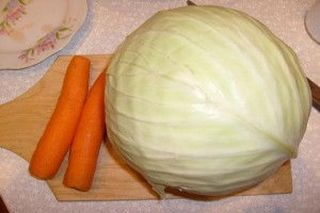
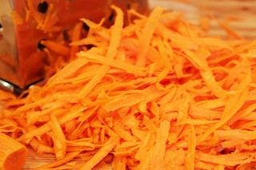
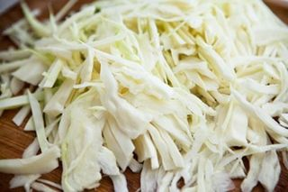
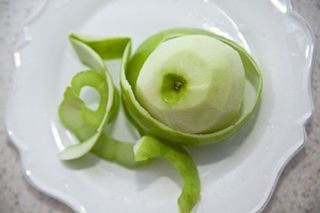
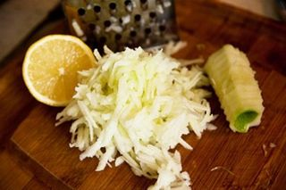
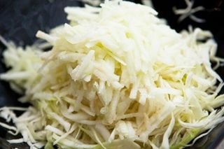
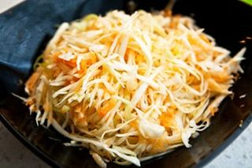

Шаг 1: подготавливаем ингредиенты.

Для начала удаляем с капусты старые листья, а морковь очищаем от кожуры. Затем промываем овощи вместе с яблоком под холодной проточной водой и сушим их бумажными кухонными полотенцами от лишней жидкости. После этого ставим на кухонный стол соль, растительное масло и кладем половинку лимона.
Шаг 2: готовим салат из капусты.

Теперь приступаем к приготовлению самого салата. Натираем морковь на средней терке и отправляем ее в глубокую салатницу.

Дальше нарезаем капусту соломкой толщиной до 5 миллиметров и перекладываем нарезку в миску к моркови.

Потом удаляем плодоножку с яблока и срезаем с него тонким слоем кожицу.

Затем натираем фрукт на средней терке и сразу выжимаем на него сок из половины лимона.

Перекладываем измельченное яблоко в миску вслед за капустой.

После этого добавляем в почти готовый салат соль, столовой ложкой смешиваем все составляющие блюда до однородной консистенции и заправляем его растительным маслом. Повторно перемешиваем салат и подаем его к столу.